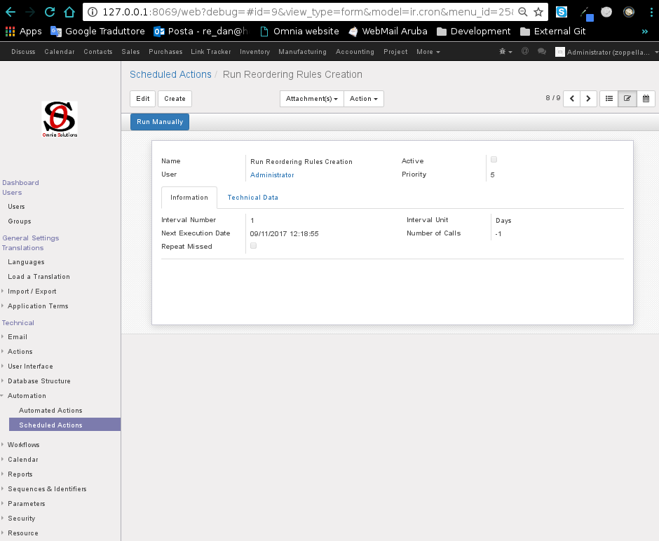
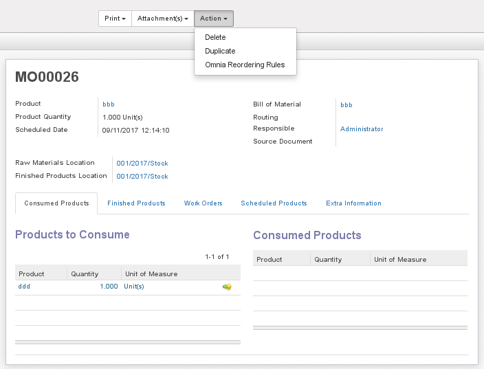

This module searches for all confirmed manufacturing orders, checks each product and creates related reordering rule if not already exists.
The module creates by default an automated action to schedule the reordering rules creation.

Is also available a new action in the manufacturing order form which allow user to run manually the automatic reordering rule creation for the current manufacturing order.
